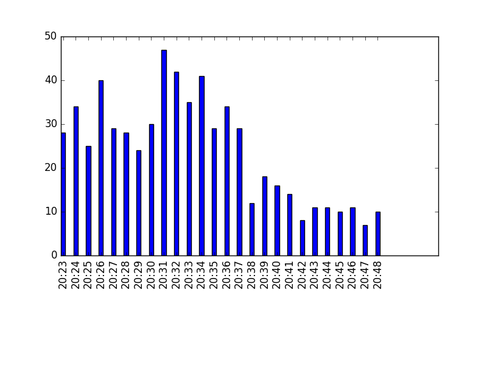
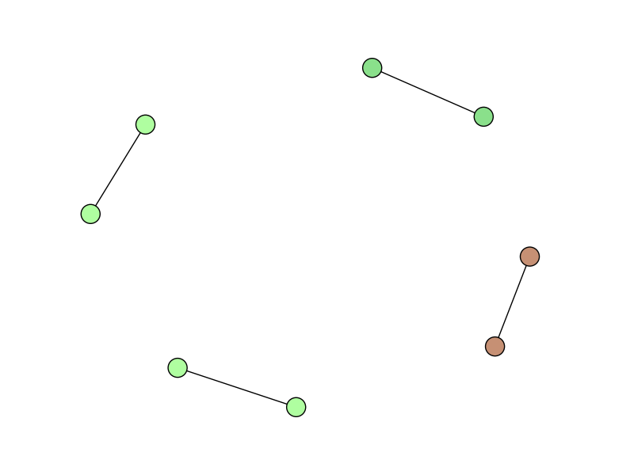
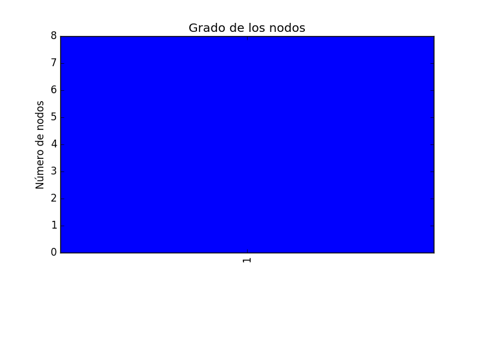

Análisis de Twitter de: #pedrocheEH
Datos relevantes
Dato
Cantidad
Número total de Tweets
623
Número ReTweets
260
Número de usuarios
460
Evolución temporal

Red de réplicas

Distribución de los grados
